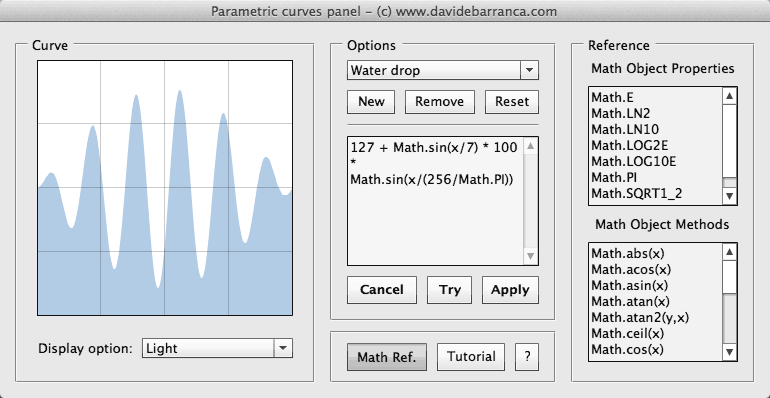
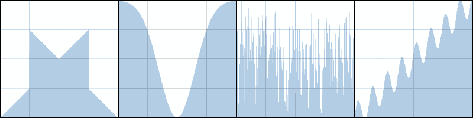
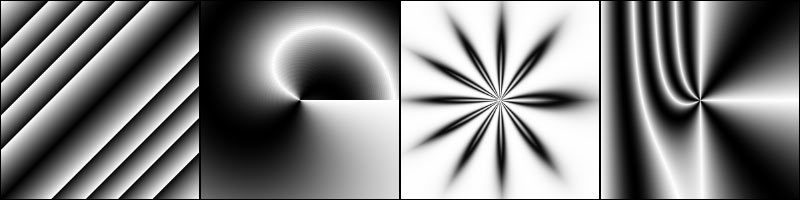
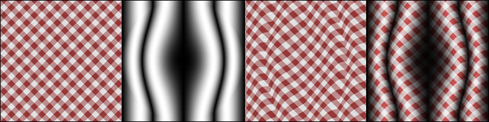
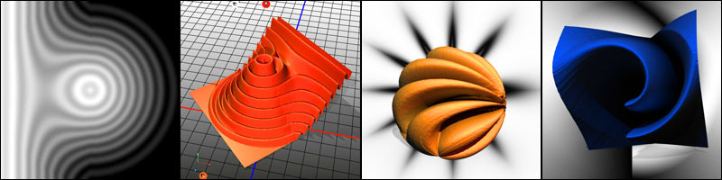
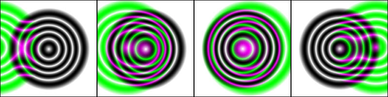

<div class="container" vocab="http://schema.org/" typeof="SoftwareApplication">

	<div class="row">

		<div class="col-sm-9" role="main">
		
			<div id="pcurves-overview" class="highlight-box text-center" style="width: 100%;" >
				<h1 class="home-title" property="name">Parametric Curves</h1>
				<p class="product-subtitle">Plot Curves Adjustment Layers</p>				
				
			</div>

			<p class="author-caption">BY DAVIDE BARRANCA</p>

			<section id="pcurves-features" class="product-section">
				<div class="row">
					<div class="col-md-3 col-sm-6">
						<h3 class="feature-title feature-pcurves pcurves-plot">Plot Functions</h3>
						<p class="feature-text" property="description">Parametric Curves lets you plot Functions inside Curves Adjustment Layers - that is, you can write your own maths to graph Curves.</p>
					</div>
					<div class="col-md-3 col-sm-6">
						<h3 class="feature-title feature-pcurves pcurves-js">Javascript Math</h3>
						<p class="feature-text">Write custom functions in Javascript using the language syntax and <kbd>Math</kbd> object's constants and methods.</p>
					</div>
					<div class="col-md-3 col-sm-6">
						<h3 class="feature-title feature-pcurves pcurves-gradient">Gradients</h3>
						<p class="feature-text">Endless creative possibilities mixing Parametric Curves on top of Gradients, to create peculiar designs and bizarre patterns.</p>
					</div>
					<div class="col-md-3 col-sm-6">
						<h3 class="feature-title feature-pcurves pcurves-3d">3D Maps</h3>
						<p class="feature-text">Use Curves applied to Gradients as source for Displacement Maps or Depth and Bump Maps to create impressive 3D objects.</p>
					</div>
				</div>	
			</section>
			
			<hr class="hr-products" style="margin-top:14px; margin-bottom:50px">		

			<section id="pcurves-screenshot">
				<div class="row">
					
				</div>
			</section>

			<hr class="hr-products" style="margin-top:14px; margin-bottom:50px">

			<section id="pcurves-examples">
				<div class="row">
					<h4 class="text-center">Curves</h4>
					
					<h4 class="text-center">Gradients</h4>
					
					<h4 class="text-center">Displacement Maps</h4>
					
					<h4 class="text-center">Depth and Bump Maps</h4>
					
					<h4 class="text-center">Animations</h4>
					
				</div>
			</section>
			
			<hr class="hr-products" style="margin-top:20px; margin-bottom:50px">
			
			<section id="pcurves-docs">
				<h1>Documentation</h1>
				<div class="row">
					<div class="col-sm-6">
						<a title="Parametric Curves User Manual" class="hide-text pcurves-doc-sprite pcurves-manual pull-left img-circle img-documentation" href="http://www.davidebarranca.com/2013/03/parametric-curves-script-for-photoshop-user-guide/" target="_blank">User Manual</a>
						<h4>User Manual</h4>
						<p class="feature-text">All the details about the interface with a primer on Functions writing by author <span property="author" typeof="Person"><span property="name"><a href="https://plus.google.com/100201708575651642890" target="_blank" property="url">Davide Barranca</a></span></span>.</p>
					</div>
					<div class="clearfix visible-xs"></div>
					<div class="col-sm-6">
						<a title="Parametric Curves - Examples" class="hide-text pcurves-doc-sprite pcurves-funstuff pull-left img-circle img-documentation" href="http://www.davidebarranca.com/2013/03/gradients-and-parametric-curves-in-photoshop/" target="_blank">Examples</a>
						<h4>Examples</h4>
						<p class="feature-text">Several examples of Parametric Curves application for 2D and 3D design.</p>
					</div>
				</div>
			</section>
			
			<hr class="hr-products" style="margin-top:40px; margin-bottom:50px">

			<section style="margin-top: 60px; margin-bottom:60px">
				<div class="highlight-box text-center" id="overview">
					<h4 class="home-title">Parametric Curves <span class="software-version" property="softwareVersion">(1.0.2)</span></h4>
					<p class="product-subtitle small" property="offers" typeof="Offer"><span property="price">Freeware</span></p>				
					<a href="https://creative.adobe.com/addons/products/851" target="_blank" class="btn btn-primary btn-buy" role="button">
						Get it on Adobe Add-ons <span class="cs6cc">Photoshop CC/CS6 - <span property="operatingSystem">Mac & Win</span></span>
					</a>
				</div>
			</section>
			
			<section  id="pcurves-reviews" style="margin-bottom: 40px">
				<div class="row">
					<div class="col-lg-12">
						<h1 style="margin-top: 0">Reviews</h1>
						<span class="glyphicon glyphicon-star"></span>
						<span class="glyphicon glyphicon-star"></span>
						<span class="glyphicon glyphicon-star"></span>
						<span class="glyphicon glyphicon-star"></span>
						<span class="glyphicon glyphicon-star"></span>
						&nbsp;<span class="h4" property="aggregateRating" typeof="AggregateRating">(<span property="ratingValue">5</span>/5 based on <span property="reviewCount">2</span> reviews on Adobe Exchange)</span>
						<ul class="list-unstyled list-rating">
							<li>
								<ul class="list-unstyled" property="review" typeof="Review">
									<li class="review-title">
										<span property="name">Play with it!</span> (v1.0.1)
									</li>
									<li class="feature-text">
										<span class="glyphicon glyphicon-star"></span>
										<span class="glyphicon glyphicon-star"></span>
										<span class="glyphicon glyphicon-star"></span>
										<span class="glyphicon glyphicon-star"></span>
										<span class="glyphicon glyphicon-star"></span>
										<meta property="datePublished" content="2013-04-24"/>24 Apr 2013 by <span property="author">Mario</span>
										<span property="reviewRating"  typeof="Rating">
											<meta property="worstRating" content = "1" />
											(<span property="ratingValue">5</span>/<span property="bestRating">5</span>)
										</span>
									</li>
									<li class="feature-text" property="description">
										Really nice extension. You could play a lot with it. Combining Photoshop curves adjustments power with mathematical functions. Wow!
									</li>
								</ul>
							</li>
							<li>
								<ul class="list-unstyled" property="review" typeof="Review">
									<li class="review-title">
										<span property="name">Hyper Creative!</span> (v1.0.0)
									</li>
									<li class="feature-text">
										<span class="glyphicon glyphicon-star"></span>
										<span class="glyphicon glyphicon-star"></span>
										<span class="glyphicon glyphicon-star"></span>
										<span class="glyphicon glyphicon-star"></span>
										<span class="glyphicon glyphicon-star"></span>
										<meta property="datePublished" content="2013-03-27">27 Mar 2013 by <span property="author">Anonymous</span>
										<span property="reviewRating"  typeof="Rating">
											<meta property="worstRating" content = "1" />
											(<span property="ratingValue">5</span>/<span property="bestRating">5</span>)
										</span>
									</li>
									<li class="feature-text" property="description">
										Having lots of fun with this, I will experiment a lot! Thank you for let us have this for free!
									</li>
								</ul>
							</li>
						</ul>
					</div>
				</div>
			</section>

		</div> <!-- main -->

		<aside class="col-sm-3 hidden-xs" role="complementary">
			{% include sidebar-products.html %}
		</aside>

	<!-- Structured Data META tags -->
	<meta property ="url" content="http://www.cs-extensions.com/products/parametriccurves/"/>
	<meta property="downloadURL" content="http://bit.ly/15ZUmzR"/>
	<meta property="applicationCategory" content="DesignApplication"/>
	<meta property="applicationSubCategory" content="Photoshop Extension"/>
	<meta property="applicationSuite" content="Photoshop"/>
	<meta property="datePublished" content="2013-03-01"/>
	<meta property="dateUpdated" content="2013-10-20"/>

	</div> <!-- row -->
</div> <!-- container -->